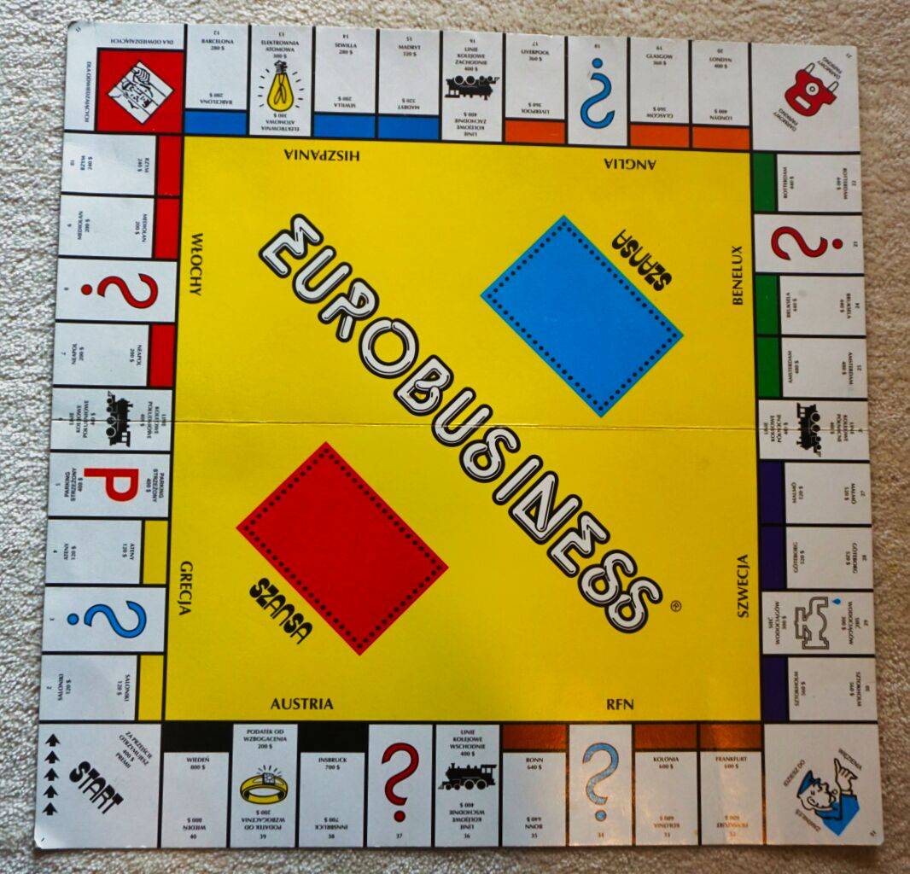
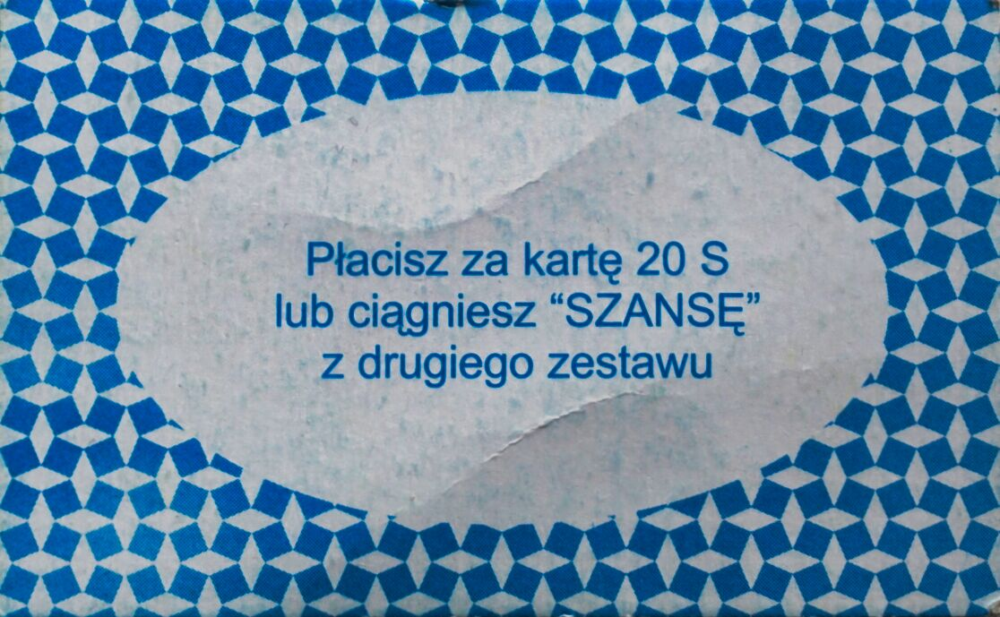

Gdzie stawiać hotele w Eurobiznesie
O zastosowaniu metody Monte Carlo już pisałem, gdy analizowałem oczekiwany czas gry w wojnę. Weźmy teraz Eurobiznes. Są ludzie, którzy grali w Monopol, a są tacy, co grali w Eurobiznes.
W przeciwieństwie do wojny, która jest grą czysto losową, Eurobiznes zdecydowanie taki nie jest. Jeśli tak Wam się zdaje, zaryzykuję stwierdzenie, że graliście w to źle ;) Moja strategia była bardzo prosta: kupuj wszystko, co się da. Jak nie masz pieniędzy, dawaj posiadłości pod zastaw i kupuj dalej. Po pewnym czasie, gdy będziesz mieć więcej kart, zacznij negocjacje z przeciwnikami (wymiana kart).
Wiem, że niektórzy grali w Eurobiznes bez negocjacji. Wtedy ta gra jest dla mnie pozbawiona sensu i rzeczywiście jest prawie losowa i beznadziejnie długa. “Beznadziejnie” dlatego, że jest mała szansa, by zwyczajnie poruszając się po planszy, udało się komuś skompletować całe państwo — a tylko stawiając domy i hotele, można tę grę skończyć. Umożliwiając wymianę kart (sprzedaż, wymianę z dopłatą itp.), bardzo mocno redukujemy losowość i wygrywa osoba o większych zdolnościach negocjacyjnych (w skrócie: trzeba przekonać przeciwnika, że dana wymiana mu się opłaca, mimo że tak nie jest).
(W praktyce niestety bywa tak, że jeśli gra się któryś raz z tymi osobami i Ty często wygrywasz, to na wszelki wypadek nikt nie chce się z Tobą wymieniać…).
Skoro eurobiznes to gra negocjacyjna, to trzeba mieć dobry obraz tego, ile warte są poszczególne posiadłości. Składa się na to wiele czynników: koszt postawienia domu, zysk z domów i hoteli, ale też prawdopodobieństwo, że ktoś zatrzyma się w danym mieście. I w tym wpisie zajmę się tym ostatnim.
Plansza

Najpierw przypomnijmy sobie, jak wygląda plansza. Składa się z 40 pól numerowanych od 1 (“Start”) do 40 (“Wiedeń”). Mamy jedno pole, które zmienia położenie (31, “Idziesz do więzienia”) i sześć, które potencjalnie zmieniają położenie (karty szans: 16 niebieskich i 16 czerwonych). Będziemy je dalej nazywać polami specjalnymi.
I zacznijmy od tego, że gdyby nie te pola, sprawa byłaby bardzo prosta. Na każdym zatrzymywalibyśmy się z takim samym prawdopodobieństwem, także końcowy rozkład byłby jednostajny (minimalne rozbieżności mogłyby wynikać z tego, że zawsze zaczynamy na polu 1).
Dodajmy jeszcze, że jeśli w wyniku rzutu kostkami otrzymamy na obu taką samą liczbę oczek (dubel), rzucamy jeszcze raz, przemieszczając się o tyle pól, ile w sumie wypadło oczek w obu rzutach. Jeśli jednak ponownie coś takiego się wydarzy, idziemy do więzienia, czyli na pole 11.
Metoda Monte Carlo
Jak policzyć prawdopodobieństwa zatrzymania się na poszczególnych polach? Możemy rzucać kostką i zapisywać, gdzie stanęliśmy. Jeśli się uprzemy i zrobimy to naprawdę dużo razy, szukane prawdopodobieństwa otrzymamy, dzieląc liczbę przypadków zatrzymania się na danym polu przez liczbę wszystkich rzutów. To jest istota metody Monte Carlo. Chodzi tylko o to, by zamiast samemu rzucać kostką, zmusić do tego komputer.
Napiszmy pseudokod, który coś takiego zrealizuje. Dla prostoty będziemy grali sami ze sobą, gdyż interakcje między graczami i tak nie zmieniają położenia.
# ustaw się na polu "start"
# powtarzaj N razy:
# rzuć dwiema kostkami
# jeśli liczba oczek nie jest taka sama, przesuń się o ich sumę
# w przeciwnym wypadku rzuć jeszcze raz
# jeśli liczba oczek nie jest taka sama, przesuń się o sumę z obu rzutów
# w przeciwnym wypadku idziesz do "więzienia"
# jeśli jesteś na polu specjalnym, z pewnym prawdopodobieństwem zmień pozycję
# zapamiętaj, w jakim polu się znalazłeśWersja uproszczona
Zacznijmy jednak od uproszczonej wersji, która nie będzie uwzględniać pól specjalnych, a jedynie to, że wyrzucając dwukrotnie dubla, idziemy do więzienia. Wykonałem 10 milionów rzutów, poniżej szacowane prawdopodobieństwa, że staniemy na poszczególnych polach.

Zastanówmy się, czy ma to sens. Jak napisałem, gdyby wyrzucenie podwójnego dubla nie skutkowało pójściem do więzienia (pole 11), rozkład powinien być jednostajny. Ponieważ prawdopodobieństwo tego jest niewielkie, obserwowany rozkład (poza więzieniem) rzeczywiście przypomina jednostajny. A dalej, skoro na polu 11 stajemy częściej, to pola odległe o około 7 oczek (najbardziej prawdopodobna suma dwóch rzutów) są trochę popularniejsze.
Czy to, że więzienie odwiedzamy około dwa razy częściej, da się wyjaśnić? Prawdopodobieństwo wyrzucenia tego samego na obu kostkach wynosi 1/6, w takim razie z prawdopodobieństwem 1/36 stanie się to dwa razy z rzędu. Z kolei prawdopodobieństwo stanięcia na dowolnym polu wynosi 1/40, czyli dla więzienia 1/36+1/40, więc ponad dwa razy więcej (jest to przybliżony wynik, gdyż podając wartość 1/40, założyłem brak więzienia).
Pola specjalne
Uwzględnijmy teraz pola specjalne. Mamy pole 31, z którego zawsze idziemy do więzienia, oprócz tego w polach 3, 18 i 34 bierzemy niebieską kartę szansy, natomiast w polach 8, 23 i 37 czerwoną. Wśród niebieskich kart istnieją trzy zmieniające położenie: “Wracasz na start” (tzn. na pole 1), “Idziesz do więzienia” (11), “Idziesz do Wiednia” (40). Wśród czerwonych kart mamy siedem zmieniających położenie: “Wracasz na start” (1), “Idziesz do Neapolu” (7), “Idziesz do więzienia” (11), “Wracasz do Madrytu” (15), “Wracasz do Brukseli” (24), “Idziesz do Kolei Wschodnich” (36), “Cofasz się o trzy pola”.
Możemy zatem założyć, że jeśli trafimy na pole z niebieską kartą, z prawdopodobieństwem 13/16 nie zmienimy położenia, natomiast z prawdopodobieństwami 1/16 przesuniemy się na pole 1, 11 lub 40. Podobnie w przypadku czerwonej karty: z prawdopodobieństwem 9/16 nie zmienimy położenia, z prawdopodobieństwami 1/16 przesuniemy się na pole 1, 7, 11, 15, 24, 36 lub cofniemy się o trzy pola.
Poniżej uzyskany rozkład. Tym razem zaznaczyłem na czerwono pola, w których bierzemy czerwoną kartę, analogicznie z niebieskimi.

Wykres zmienił się wyraźnie. Jest znacznie większe ryzyko, że pójdziemy do więzienia, a na niektórych polach zatrzymujemy się rzadziej. Częściowo wynika to z przyjętej przeze mnie konwencji, że jeśli zmieniamy pole (bo np. idziemy do więzienia), nie zatrzymujemy się na nim. Stąd czerwone słupki są znacznie krótsze od pozostałych, a na polu “Idziesz do więzienia” nie da się zatrzymać.
Wnioski
Poza więzieniem, najpopularniejszym polem jest to o numerze 20, czyli Londyn, kolejnym “Start” i Bruksela. Sumując prawdopodobieństwa, najczęściej staje się w Anglii (8,8%), potem w Beneluksie (8,6%) i Szwecji (7,9%). Najrzadziej w Grecji (4,2%) i Austrii (4,6%). To potwierdza nasze dziecięce obserwacje, że najcenniejsze są nieruchomości w Anglii (zawsze chcieliśmy się za nie wymieniać). Są tańsze od Beneluksu (200$ za dom, w Beneluksie 300$), a trochę częściej tam się wchodzi. Za zatrzymanie w hotelu w Londynie płaci się 2000$ i dwa takie wejścia zwykle wystarczą, by ktoś zbankrutował.
Austria oczywiście kompletnie się nie opłaca. Małe prawdopodobieństwo, że ktoś tam się zatrzyma (co głównie wynika z tego, że są to tylko dwa pola, ale nie tylko), a domki bardzo drogie (400$). Co prawda za postój w hotelu w Wiedniu trzeba zapłacić aż 4000$, ale to jest niepotrzebnie dużo (tzn. wystarczą tańsze hotele, żeby wygrać grę). Wejście do Grecji jest jeszcze mniej prawdopodobne, ale tam z kolei domki są za darmo (100$), także dla mnie była to lepsza inwestycja, szczególnie w początkowej fazie gry.
Czy gracz nie ma wpływu na zmianę pozycji?
Takie symulacje są proste do wykonania, o ile zmiana pozycji gracza jest czysto losowa (zależy tylko od wyniku rzutu kostką). W Eurobiznesie tak jest, prawda? Otóż nie do końca… Spójrzcie na poniższą kartę.

Od Ciebie zależy, co zrobisz. Jeśli zapłacisz 20$, nie zmienisz położenia, ale jeśli wybierzesz kartę z drugiego zestawu, to z prawdopodobieństwem 7/16 przejdziesz na inne pole.
Od razu mówię, że w swoich symulacjach zignorowałem tę możliwość. Ma ona znikomy wpływ na szacowane prawdopodobieństwa, a ponieważ zależy od gracza, nie byłoby to łatwe do modelowania.
Kącik teoretyczny
Czy metoda Monte Carlo, którą tu próbuję sprzedać, aby na pewno zwraca poprawne wyniki? Jaką mamy pewność, że to, co otrzymaliśmy, to prawdziwe prawdopodobieństwa? Wynika to z tak zwanego Prawa Wielkich Liczb. Liczone przeze mnie proporcje dla konkretnego pola to nic innego jak średnia arytmetyczna \(\frac{x_1+\ldots+x_N}{N}\), gdzie \(x_i\) są równe 1, gdy w \(i\)-tym ruchu zatrzymaliśmy się na danym polu, oraz 0, gdy nie. Nie wnikając w szczegóły, Prawo Wielkich Liczb mówi, że wraz ze zwiększającym się \(N\), taka średnia arytmetyczna dąży do “prawidłowej” wartości (wartości oczekiwanej, w tym przypadku rzeczywistej proporcji/prawdopodobieństwa).
Ktoś jeszcze bardziej dociekliwy mógłby jednak zadać pytanie, czy zaobserwowane różnice w częstości nie są przypadkowe? Czy 10 milionów symulacji to wystarczająco dużo? Żeby to policzyć, można wykorzystać inne twierdzenie statystyki matematycznej, Centralne Twierdzenie Graniczne. Ale można też użyć znacznie prostszej metody, “na Janusza” (wybaczcie). Uruchamiamy cały kod (który swoją drogą jest dostępny tutaj) jeszcze raz (tzn. dla innego ziarna generatora losowego) i widzimy, że dostajemy praktycznie identyczny wykres — a w takim razie nie ma sensu zwiększać liczby symulacji. Ktoś kręci nosem? To niech uruchomi kolejny raz, aż zrozumie.